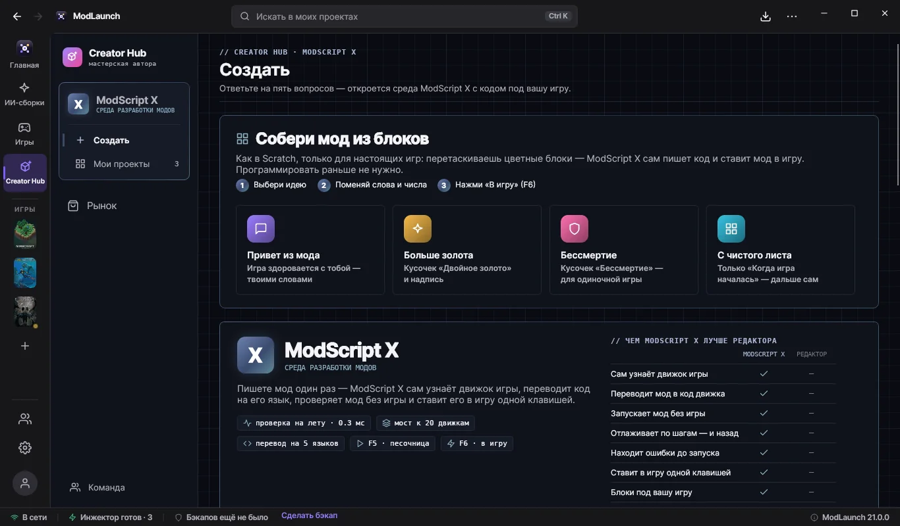
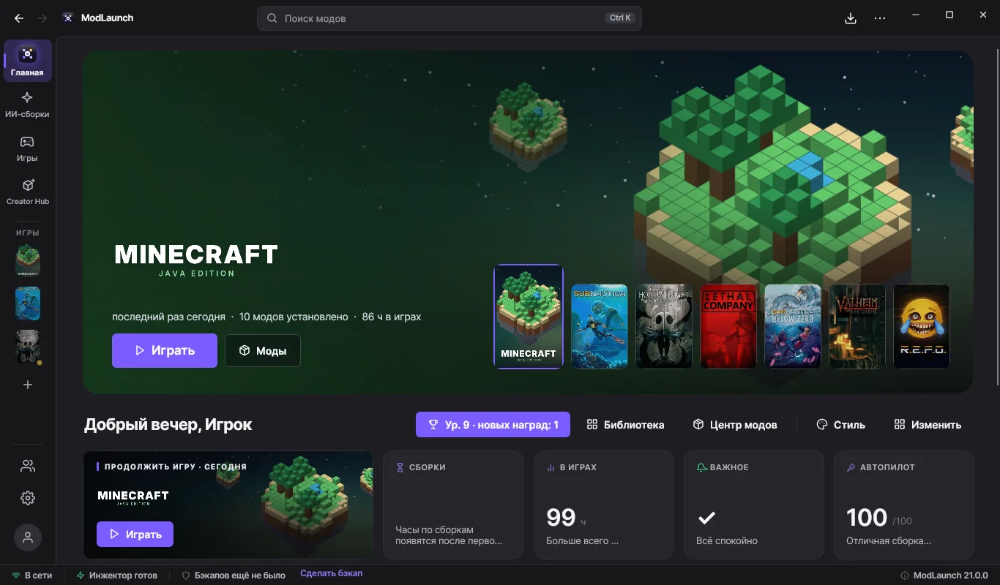
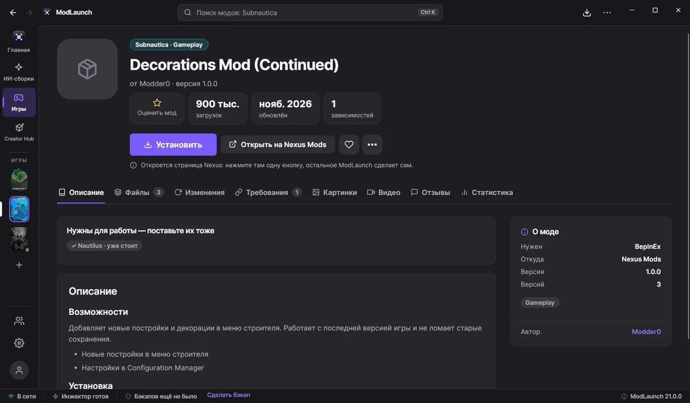
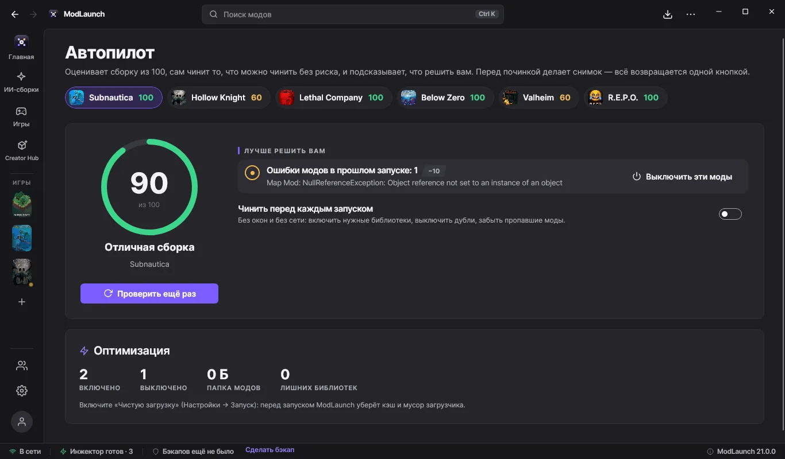
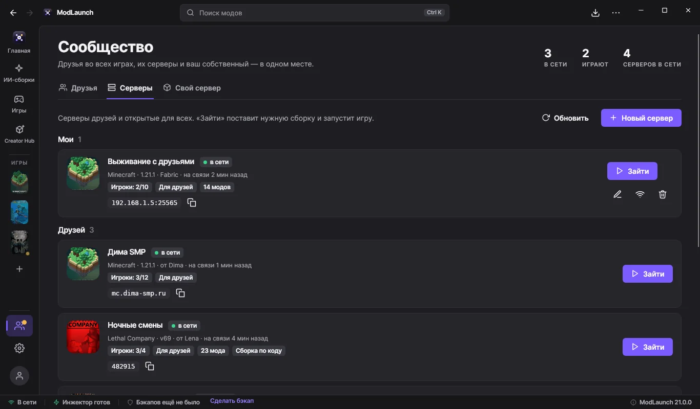
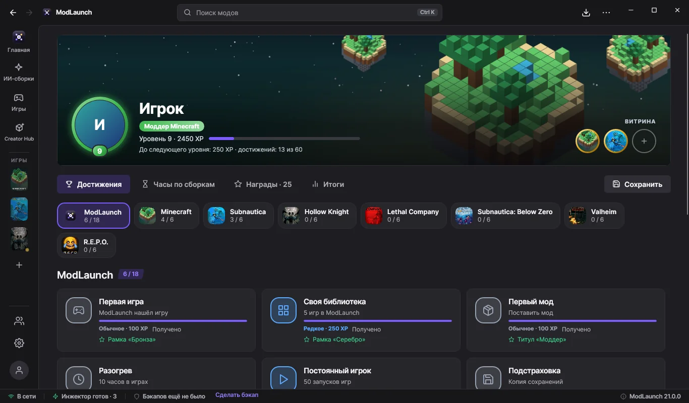
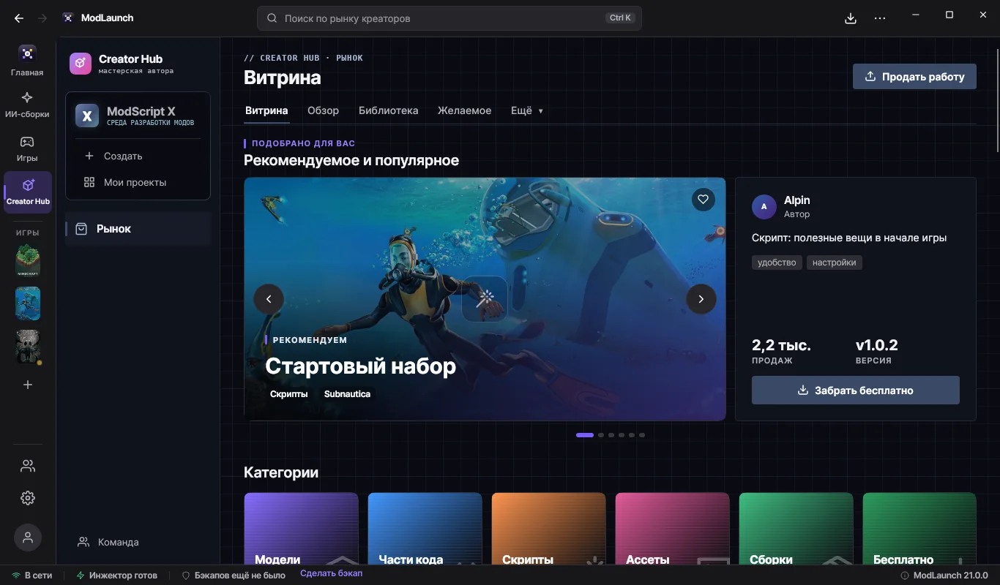
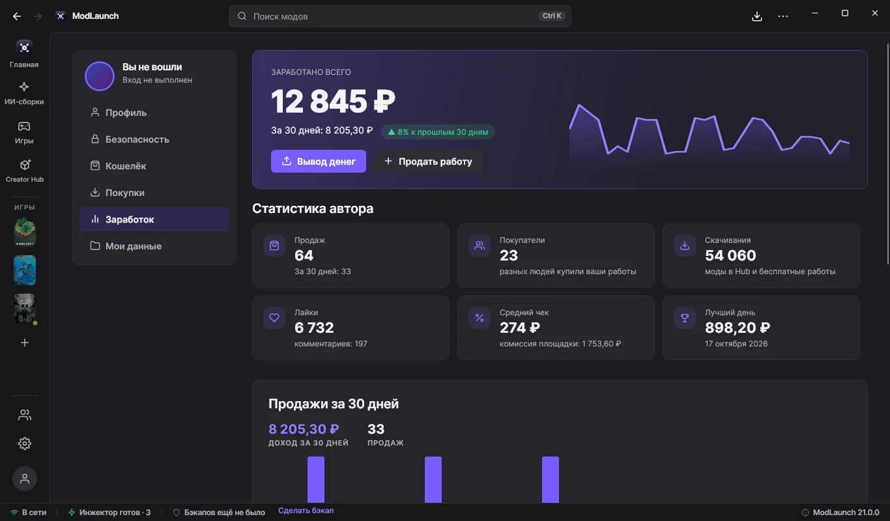
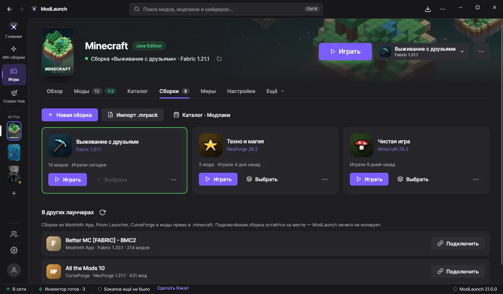

Первый мод за минуту
«Создать → Собери мод из блоков»: четыре готовые идеи для вашей игры и одна кнопка.

Все игры с компьютера в одной библиотеке — из Steam, Epic, GOG и любых папок. Моды ставятся одной кнопкой, друзья и награды — в профиле, а свои моды можно собрать в студии ModScript X и выложить на Рынок.
Для Windows 10 и 11. В каталоге 141 711 игр и больше 100 000 модов, интерфейс на 8 языках.
Библиотека игр, моды, друзья, профиль, студия авторов и Рынок — в одном окне. Выберите раздел слева: это настоящие экраны ModLaunch 21.0.

Последняя игра во весь экран, полка обложек и виджеты: уровень, время в играх, автопилот, друзья. Виджеты добавляются, двигаются и меняют размер, как на телефоне.
ModLaunch сам находит игры на компьютере и добавляет новые, как только они установились. Запуск, время в игре, коллекции и обложки — для всех игр сразу, откуда бы они ни были.
Никаких «скачайте архив, распакуйте, переименуйте dll». ModLaunch ставит, обновляет и чинит моды сам.




Аккаунт ModLaunch связывает всё: друзей, серверы, профиль и награды. На другом компьютере профиль подтянется сам.
ModScript X — среда разработки модов внутри ModLaunch. Мод собирается из блоков, как в Scratch, а ModLaunch сам переводит его в код нужного движка и ставит в игру.
«Создать → Собери мод из блоков»: четыре готовые идеи для вашей игры и одна кнопка.

Скрипты, кусочки кода, модели и сборки. Купленное ставится в игру при запуске, исходник закрыт.

Продажи, скачивания, лайки и доход за 30 дней — в разделе «Аккаунт → Заработок».

Все версии от 1.12 до свежих снапшотов. Нужный загрузчик ставится сам, а играете вы через официальный лаунчер — аккаунт Microsoft остаётся вашим.

Авторы публикуют моды в ModLaunch Hub прямо из программы. Без рекламы и платного «быстрого скачивания»: здесь можно посмотреть и скачать, а в ModLaunch мод ставится одной кнопкой.
Всё, за что любят игровые платформы, — и то, чего в них нет для модов.
| ModLaunch | Steam | Vortex | r2modman | |
|---|---|---|---|---|
| Библиотека всех игр: Steam, Epic, GOG и свои папки | ✓ | ярлыки | — | — |
| Друзья, профиль, уровни и достижения | ✓ | ✓ | — | — |
| Оверлей в игре и Big Picture с геймпадом | ✓ | ✓ | — | — |
| Моды Thunderstore и Nexus Mods в один клик | ✓ | — | Nexus | Thunderstore |
| Minecraft: сборки, Fabric, Forge и Modrinth | ✓ | — | — | — |
| Профили модов, откат версий, конфликты файлов | ✓ | — | ✓ | частично |
| Площадка модов от авторов | ✓ | Мастерская | — | — |
| Среда разработки модов с блоками | ✓ | — | — | — |
| ReShade и DXVK одной кнопкой | ✓ | — | — | — |
| Бесплатно | ✓ | ✓ | ✓ | ✓ |
Steam — ещё и магазин: игры покупаются там. ModLaunch находит купленные игры и добавляет к ним моды, друзей на все игры и студию авторов. Мастерская Steam есть только в части игр.
Моды приходят с сайтов их авторов, а каждый файл и каждый скрипт проверяется.
Thunderstore, Nexus Mods, Modrinth и ModLinks — файл скачивается оттуда, где его выложил автор.
Контрольная сумма сверяется при скачивании. Не совпала — установка отменяется.
Скрипты с Рынка проверяются при публикации, покупке и перед каждым запуском. Если игра со скриптом дважды падает, он выключается сам.
ModLaunch обновляется только по https и ставит обновление после проверки контрольной суммы. Код открыт на GitHub.
Да. ModLaunch бесплатный, без подписок. Платными бывают только работы авторов на Рынке — покупать их не обязательно. Справа в программе есть узкая колонка рекламы, её можно закрыть.
Игры по-прежнему покупаются в магазинах — Steam, Epic Games, GOG. ModLaunch находит их на компьютере, запускает и добавляет то, чего в магазинах нет: моды в один клик, друзей на все игры, профиль с наградами и студию модов. Если игры ещё нет, ModLaunch поставит её через Steam прямо со страницы игры.
Так Windows пишет про программы без платной цифровой подписи. Нажмите «Подробнее» → «Выполнить в любом случае». Исходный код открыт на GitHub, а установщик собирается там же автоматически и перед выпуском проходит самопроверку.
С сайтов, где их выкладывают авторы: Thunderstore, Nexus Mods, Modrinth и ModLinks — ModLaunch скачивает оригинал. И из ModLaunch Hub, куда авторы публикуют моды прямо из программы.
Нет. Игры, моды и всё, что на этом компьютере, работают без него. Аккаунт ModLaunch нужен для друзей и серверов, профиля в облаке, отзывов, Рынка и публикации модов.
Откройте Minecraft в ModLaunch и создайте сборку: выберите версию и загрузчик — Fabric, Quilt, Forge или NeoForge. Моды из каталога Modrinth ставятся в сборку одной кнопкой, а запуск идёт через официальный лаунчер Minecraft.
Скорее всего, она уже есть: ModLaunch знает 141 711 игр — всю библиотеку Steam и почти 3000 игр с модами. Если нет — нажмите «+» в программе: ModLaunch найдёт игру на диске, узнает движок и подберёт каталог модов.
Среда разработки модов в Creator Hub. Мод собирается из блоков или пишется кодом на ModScript X, а ModLaunch сам переводит его на язык движка игры — C#, Lua, GDScript, Python или JavaScript — и ставит в игру клавишей F6. Только для одиночной игры: с античитами инжектор не работает.
Каждый скрипт проверяется при публикации, покупке и перед каждым запуском: опасные вызовы, бесконечные циклы, исполняемые файлы. Купленный скрипт вставляется в игру при запуске и убирается после выхода, а копия на диске зашифрована для вашего компьютера.
Один установщик, около 150 МБ. ModLaunch сам найдёт игры — останется выбрать, во что играть.
Скачать для Windowsбесплатно Портативная версия (zip)